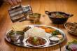
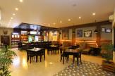
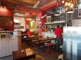

BEST PALCES TO EAT IN KATHMANDU
jimbu Thakali
- Address: Next to Tangaal Chaata Ganesh, Gahana Pokhari Marg, Kathmandu 44600
- hours:9 AM–10 PM
- jimbu thakali


Fire And Ice Pizzeria
- Address: Kathmandu 44600
- hours:- 10am-10:30pm
- fireicepizza

the village cafe
- Address:Lalitpur 44601
- hours:- 11am-22:00pm
- THE VILLAGE CAFE